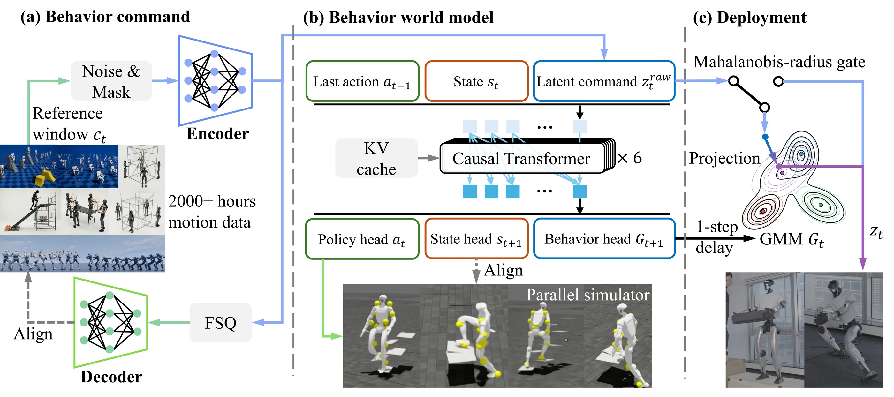
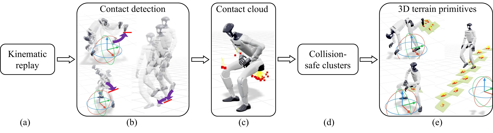

01
Box liftingObject interaction
Lifting a box
Ours lifts and holds the box while SONIC loses a stable grasp.
1Tsinghua University 2GigaAI 3University of Shanghai for Science and Technology 4Beijing Jiaotong University 5Institute of Automation, Chinese Academy of Sciences 6University of Chinese Academy of Sciences #Corresponding authors
Full system
GigaBrain-WBC-0.5 models what the robot can do next while it acts, enabling environment interaction and extreme robustness in a single whole-body controller.
Head-to-head
Matched hardware trials: SONIC is shown on the left and ours on the right, driven simultaneously by the same live command.
Ours lifts and holds the box while SONIC loses a stable grasp.
Ours rises while holding a 2 kg fire extinguisher; SONIC falls during the ascent.
Ours climbs onto the platform and stabilizes; SONIC fails to complete the ascent.
Ours loads the box as a seat; SONIC remains in a half-squat without stable support.
Capability 01
The controller turns seats and platforms into load-bearing support while coordinating balance with carried objects.
The robot lowers onto a real chair and uses the seat as load-bearing support under live whole-body command.
While holding a large black case, the robot steps onto the platform and stabilizes without dropping it.
The robot climbs while carrying a cardboard box, adapting its balance to both the payload and the platform contact.
Capability 02
When the command under current environment is infeasible, the policy remains driveable.
The same sitting command resolves to a stable squat.
The robot keeps carrying instead of committing to a missing step.
Push and trip recovery within the tracking policy itself.
Infeasible intent is retracted to a continuous best-effort motion.
Motion range
One command interface across flexibility, control, and explosive dynamics.
Embodiment
The same controller design transfers beyond a single humanoid body.
Positioning
Prior methods cover pieces of the problem. GigaBrain-WBC-0.5 brings them together.
| Method | Diverse tracking | Teleoperation | Terrain interaction | Object interaction | OOD robust | Fall robust |
|---|---|---|---|---|---|---|
| GMT | ✓ | ✕ | ✕ | ✕ | ✕ | ✕ |
| TWIST | ✓ | ✓ | ✕ | ✕ | ✕ | ✕ |
| SONIC | ✓ | ✓ | ✕ | ✕ | ✕ | ✕ |
| HoloMotion-1 | ✓ | ✓ | ✕ | ✕ | ✕ | ✕ |
| Humanoid-GPT | ✓ | ✓ | ✕ | ✓ | ✕ | ✕ |
| SceneBot | ✓ | ✕ | ✓ | ✓ | ✕ | ✕ |
| CMP | ✓ | ✓ | ✕ | ✓ | ✓ | ✕ |
| BFM-Zero | ✓ | ✓ | ✕ | ✕ | ✕ | ✓ |
| GigaBrain-WBC-0.5 | ✓ | ✓ | ✓ | ✓ | ✓ | ✓ |
Core results
Best values are highlighted. All results are sim-to-sim in MuJoCo.
| Method | Standard | Terrain | OOD | Fall | ||||||
|---|---|---|---|---|---|---|---|---|---|---|
| MPKPE↓ | RootVel↓ | SR↑ | MPKPE↓ | RootPos↓ | SR↑ | MPKPE↓ | SR↑ | SR↑ | Jerk↓ | |
| SONIC | 82.3 | 189.6 | 94.1 | 331.2 | 294.7 | 15.3 | 327.6 | 50.0 | 5.9 | 1295.5 |
| HoloMotion-1 | 109.4 | 121.3 | 89.0 | 330.0 | 280.7 | 18.7 | 248.7 | 67.7 | 0.7 | 2000.0 |
| Humanoid-GPT | 90.9 | 205.8 | 91.9 | 283.3 | 326.7 | 14.0 | 208.0 | 70.6 | 2.9 | 3598.1 |
| Ours | 76.6 | 211.1 | 96.3 | 93.3 | 100.7 | 81.3 | 158.0 | 83.1 | 99.3 | 1050.6 |
Errors are in mm except RootVel (mm/s) and Jerk (rad/s3); SR is percent. Fall SR uses the recovery criterion described in the paper.
Method overview
A causal Transformer jointly predicts action, next proprioceptive state, and the distribution of the next latent behavior command. The same prediction used to act also defines what is feasible now.

Data pipeline
Contact evidence in retargeted motion is recovered as full 3D, simulator-ready geometry: stairs, seats, boxes, tables, and other supports.

Abstract
Whole-body motion tracking policies turn a humanoid into a robust control interface: the teleoperator—or an upstream model—only supplies a coarse movement intent, while the low-level policy keeps the robot balanced and physically feasible.
Existing trackers deliver this interface only on flat ground: trained in empty scenes, they never learn how contact with terrain and objects reshapes their dynamics, and they attempt to teach the policy to balance under any command by continually enlarging the reference-motion corpus, which stops working once feasible behaviors become environment-dependent.
We present GigaBrain-WBC-0.5, the first Behavior World Model (BWM) for humanoid whole-body control. Rather than a purely reactive tracker, we train a causal Transformer to jointly predict its next action, next state, and the distribution over its next latent behavior command, so the network that acts also models how the environment shapes what it can do next.
An automatic terrain-annotation pipeline recovers full 3D contact geometry from retargeted motion, enabling terrain annotation at the scale of existing motion datasets.
The predicted distribution is reused at deployment to detect implausible commands online and retract them onto learned behaviors, so the robot attempts tasks in a “best-effort” manner.
The result is a unified policy that takes real-time command, interacts with environment, and stays robust to implausible commands, falls, and disturbances.
GigaBrain-WBC-0.5 achieves the highest success rate across all four regimes among three large-scale tracker baselines: 81.3% on terrain interaction (4.3× the strongest baseline), 83.1% under implausible commands, and 99.3% fall recovery (16.8× the strongest baseline). Hardware trials show robust interaction under missing supports and disturbances; the Unitree G1 checkpoint transfers to the Maker L01 robot with simple fine-tuning.
Citation
@article{cheng2026gigabrainwbc,
title = {GigaBrain-WBC-0.5: A Behavior World Model for Robust
Whole-Body Control with Environment Interaction},
author = {Cheng, Ziyang and Tang, Tianshu and Lan, Jinxin and Chen, Xinze and Gong, Yuhan and Liu, Zhichao and Wu, Changzhong and Mao, Yahao and Deng, Zongyan and Ma, Mingxuan and Xi, Huasen and Liu, Yilong and Wu, Yutong and Wang, Xiaofeng and Wang, Yang and Ye, Yun and Huang, Guan and Jin, Xiaojie and Zhu, Zheng and Lu, Jiwen},
journal = {arXiv preprint arXiv:2608.18234},
year = {2026}
}